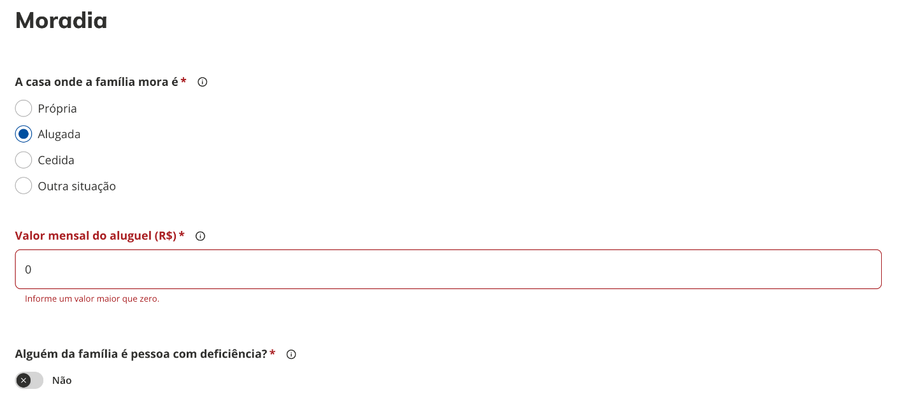
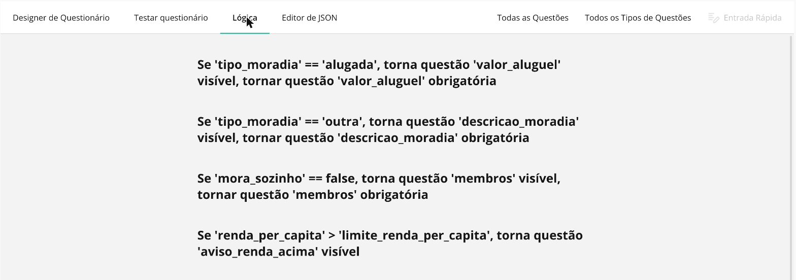
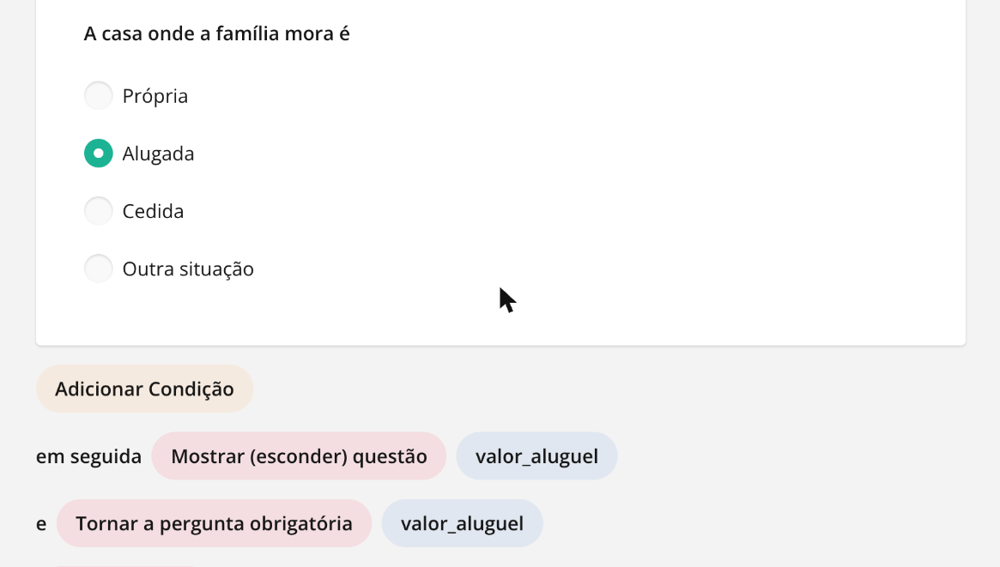
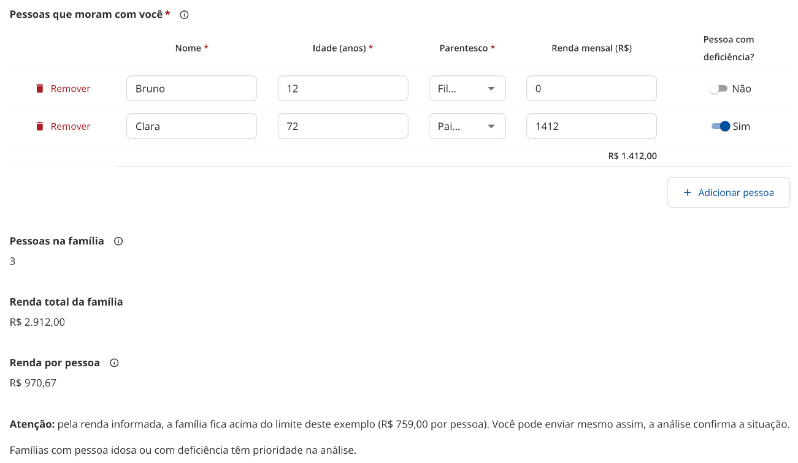

Lógica e expressões¶
Lógica é o que faz um formulário reagir ao que o cidadão responde: mostrar uma pergunta só quando outra tiver certa resposta, tornar um campo obrigatório em uma situação, calcular um valor, pular uma página ou encerrar o formulário mais cedo. Tudo isso é escrito como condições e expressões, e este capítulo explica como pensar nelas, como montá-las no Designer e o que a página do cidadão entende.
O Designer é o Survey Creator do SurveyJS 1.12.14 e o formulário é salvo no JSON do SurveyJS, com a mesma gramática de condições e expressões usada pelo construtor do X-Forms do CMS. É isso que garante a compatibilidade quando um formulário criado aqui é importado no X-Forms do CMS: as regras continuam valendo, desde que fiquem dentro do que este capítulo descreve. A página que o cidadão responde não roda o SurveyJS: ela tem um renderizador próprio que interpreta as mesmas regras. Quando o renderizador e o SurveyJS se comportam diferente, a seção 9 diz o que fazer.
Os exemplos vêm de um formulário de demonstração, o pré-cadastro familiar para programas sociais: o cidadão informa a moradia e as pessoas da casa, e o formulário calcula a renda por pessoa e mostra avisos conforme as respostas.
1. Como pensar numa regra¶
Toda regra tem três partes: onde ela vale (uma pergunta, uma coluna de matriz, uma página ou o formulário inteiro), o que ela faz (mostrar, habilitar, exigir, limpar, definir, pular, encerrar) e quando ela vale (a condição). A condição é sempre uma pergunta sobre as respostas: "a moradia é alugada?", "a renda por pessoa passa do limite?", "a lista de interesses contém saúde?". Quando a resposta é sim, a regra age; quando é não, a regra não faz nada.
No formulário de demonstração, a pergunta Valor mensal do aluguel só faz sentido quando o cidadão marcou Alugada em A casa onde a família mora é. Então, na pergunta do aluguel, a regra Torne a pergunta visível se recebe a condição {tipo_moradia} = 'alugada'. Como nesse caso o valor precisa ser informado, a regra Faça a pergunta obrigatória se recebe a mesma condição, e um validador recusa zero.

A chave para ler qualquer condição: o que está entre chaves é o nome da pergunta (o campo Nome do painel de propriedades, que também é a chave da resposta no envio), e o que está entre aspas simples é um valor. Em perguntas de escolha, o valor é o valor da opção, não o texto que o cidadão lê (veja Armadilhas).
2. Onde as regras ficam no Designer¶
Há três caminhos para a mesma regra, e o que se faz em um aparece nos outros:
- Painel de propriedades → Lógica, com a pergunta selecionada. Cada regra tem um campo de texto para a condição e o ícone de varinha mágica, que abre o construtor.
- Aba Lógica, no topo do Designer. Lista todas as regras do formulário em frases, como "Se 'tipo_moradia' == 'alugada', torna questão 'valor_aluguel' visível". Clicar numa regra abre o construtor com a condição e as ações; Adicionar Condição e Adicionar Ação completam a regra e Terminar fecha.
- Editor de JSON, para quem precisa ajustar direto. Cada regra é uma propriedade da pergunta, como
"visibleIf": "{tipo_moradia} = 'alugada'".


3. As regras de uma pergunta¶
Ficam em Painel de propriedades → Lógica, com a pergunta selecionada. A coluna JSON é o nome da propriedade no Editor de JSON.
| Regra no Designer | JSON | Quando a condição é verdadeira... | Exemplo |
|---|---|---|---|
| Torne a pergunta visível se | visibleIf |
...a pergunta aparece. Fora disso, fica oculta. | {tipo_moradia} = 'alugada' |
| Editável se | enableIf |
...a pergunta pode ser respondida. Fora disso, aparece desabilitada. | {aceite} = true |
| Faça a pergunta obrigatória se | requiredIf |
...a pergunta passa a ser obrigatória. | {tipo_moradia} = 'alugada' |
| Redefinir valor se | resetValueIf |
...a resposta é apagada. Útil quando a resposta anterior deixa de fazer sentido. | {tipo_pessoa} <> 'pj' |
| Defina o valor se + Definir expressão de valor | setValueIf + setValueExpression |
...a resposta recebe o resultado da expressão. | {quantidade} notempty e {quantidade} * 2 |
| Escolhas estão visiveis se / Escolhas são selecionáveis se | choicesVisibleIf / choicesEnableIf |
...as opções da pergunta de escolha aparecem (ou ficam selecionáveis). Vale para a lista toda. | {tem_dependente} = true |
| Expressão valor mínimo / máximo, em perguntas de data | minValueExpression / maxValueExpression |
...limita as datas aceitas. | today() |
O campo Valor de expressão pré-definida (defaultValueExpression) aparece no painel, mas a página do cidadão não o aplica. Para começar uma pergunta com um valor calculado, use Defina o valor se ou um gatilho (seção 7).
Página e painel também têm Visível se: com a condição falsa, a página inteira é pulada e o painel inteiro some, com as perguntas de dentro.
Colunas da matriz (linhas dinâmicas ou dropdown) aceitam Tornar a coluna visível se, Editável se, Tornar a coluna obrigatória se, Redefinir valor se e Defina o valor se. A condição da coluna olha as respostas do formulário, não a linha: no exemplo, a coluna Pessoa com deficiência? só aparece quando {possui_pcd} = true, para todas as linhas.
Respostas de perguntas ocultas. Uma pergunta oculta não é validada nem conta como obrigatória. O que acontece com a resposta dela é decidido em Propriedades do questionário → Data → Limpar valores invisíveis: ao completar (padrão: a resposta oculta é descartada no envio), ao ocultar, Quando a pergunta ou seu painel/página fica oculto ou Nunca.
4. Operadores¶
O construtor monta a condição em três partes: a pergunta, o operador e o valor. Adicionar Condição acrescenta outra linha, e você escolhe se as linhas se juntam com e (todas precisam valer) ou ou (basta uma).
| Operador no construtor | Na expressão | Serve para |
|---|---|---|
| é igual a | = |
texto, número, opção única, sim/não |
| é diferente de | <> |
o contrário de "é igual a" |
| é maior que, é maior ou igual a, é menor que, é menor ou igual a | >, >=, <, <= |
números, datas |
| contém | contains |
múltipla escolha e tags (a lista contém o valor) e texto (contém o trecho) |
| não contém | notcontains |
o contrário de "contém" |
| é qualquer um de | anyof |
a resposta é uma das opções listadas |
| contém todos | allof |
múltipla escolha com todas as opções listadas |
| está vazio | empty |
sem resposta |
| está preenchido | notempty |
com qualquer resposta |
Com "é qualquer um de" e "contém todos", a lista fica entre colchetes: {interesses} anyof ['saude', 'educacao'].
5. Modo avançado: a gramática¶
O campo de texto da regra aceita a expressão escrita à mão. Vale a pena quando a condição mistura e com ou, usa uma função ou faz conta. Uma expressão que o construtor não sabe representar continua valendo, só não volta para o modo visual.
| Peça | Escrita | Observações |
|---|---|---|
| Pergunta | {nome_da_pergunta} |
Em texto múltiplo e matrizes: {endereco.cidade}, {membros[0].nome}. Quantidade de linhas: {membros.length}. |
| Texto | 'assim' |
Aspas simples. |
| Número | 10, 2.5 |
Ponto como separador decimal. |
| Sim/Não | true, false |
Sem aspas. |
| Lista | ['a', 'b'] |
Usada com anyof e allof. |
| Comparação | =, <>, >, >=, <, <=, contains, notcontains, anyof, allof |
== e != também valem. |
| Vazio | {x} empty, {x} notempty |
Depois da pergunta, sem valor. |
| Junção | and, or |
Use parênteses para agrupar: ({a} = 1 or {b} = 1) and {c} notempty. |
| Conta | +, -, *, / |
Com números ou perguntas numéricas, e parênteses: ({a} + {b}) / 2. + entre textos junta os textos. |
| Função | nome(argumentos) |
Lista na seção seguinte. |
Não existe not nem resto de divisão (%). Para negar, use o operador contrário: <> em vez de "não é igual", notcontains, empty.
6. Funções disponíveis¶
| Função | Resultado | Exemplo |
|---|---|---|
sum(a, b, ...) |
Soma. Aceita listas. | sum({adultos}, {criancas}) |
min(...), max(...), avg(...) |
Menor, maior valor e média. | max({nota1}, {nota2}) |
count(lista) |
Quantidade de itens marcados. | count({interesses}) >= 2 |
sumInArray(matriz, 'coluna') |
Soma de uma coluna da matriz. | sumInArray({membros}, 'renda_mensal') |
countInArray(matriz, 'coluna') |
Quantas linhas têm a coluna preenchida. | countInArray({membros}, 'nome') + 1 |
avgInArray, minInArray, maxInArray |
Média, menor e maior valor de uma coluna. | maxInArray({membros}, 'idade') |
As funções ...InArray com um terceiro argumento |
Só as linhas que atendem ao filtro, escrito entre aspas simples. | countInArray({membros}, 'nome', '{idade} >= 60') |
iif(condição, se_sim, se_não) |
Escolhe um valor conforme a condição. | iif({renda} > 5000, 'alta', 'baixa') |
today(), currentDate() |
A data de hoje. | {data_viagem} > today() |
getDate(data) |
Converte texto em data. | getDate({nascimento}) |
currentYear(), getYear(data), year(data), month(data), day(data), weekday(data) |
Partes de uma data. | year({nascimento}) < 2008 |
age(data) |
Idade em anos a partir de uma data de nascimento. | age({nascimento}) >= 18 |
dateDiff(a, b, unidade), diffDays(a, b) |
Diferença entre datas (unidade days, months ou years). |
diffDays({inicio}, {fim}) <= 30 |
substring(texto, início, fim) |
Trecho de um texto. | substring({cep}, 0, 2) = '79' |
Não há função de arredondamento (round): para mostrar um valor com casas decimais fixas, use a pergunta Expressão com estilo de exibição número ou moeda.
7. Gatilhos, valores calculados e a pergunta Expressão¶
Com nada selecionado, Propriedades do questionário → Lógica traz o que vale para o formulário inteiro.
Condições (gatilhos) executam uma ação quando a condição vira verdadeira:
| Gatilho no Designer | JSON | O que faz |
|---|---|---|
| Completar questionário | complete |
Termina o formulário e envia, sem passar pelas páginas restantes. |
| Pular para a pergunta | skip |
Vai direto para a pergunta escolhida. |
| Definir resposta | setvalue |
Grava um valor fixo em uma pergunta. |
| Copiar resposta | copyvalue |
Copia a resposta de uma pergunta para outra. |
| Executar expressão | runexpression |
Grava numa pergunta o resultado de uma expressão. |
Valores calculados são variáveis que o cidadão não vê, usadas nas condições e em outras expressões. No exemplo, qtd_idosos tem a expressão countInArray({membros}, 'nome', '{idade} >= 60') e o aviso de prioridade usa {qtd_idosos} > 0 em Visível se. Um valor calculado não vai na resposta enviada; se o valor precisa chegar às respostas ou à API externa, use a pergunta Expressão.
A pergunta Expressão (grupo Conteúdo da caixa de ferramentas) mostra o resultado em tempo real e envia o valor com a resposta. O Estilo de exibição de valor pode ser número, moeda (com a moeda, como BRL), porcentagem ou data. No exemplo, Renda por pessoa usa (sumInArray({membros}, 'renda_mensal') + {renda_responsavel}) / (countInArray({membros}, 'nome') + 1) com estilo moeda.
Na matriz, a coluna também pode ter Tipo total (soma, contagem, média, mínimo ou máximo), mostrado abaixo da coluna. O total vai na resposta como <nome da matriz>-total, por exemplo "membros-total": { "renda_mensal": 1412 }.

8. Validadores¶
Ficam em Painel de propriedades → Validação → Validadores; a lista de tipos usa os nomes abaixo. A mensagem aparece embaixo do campo e, no envio, num resumo no topo da página.
| Validador | JSON | O que confere | Exemplo |
|---|---|---|---|
| expressão | expression |
A condição precisa ser verdadeira. | {declaracao_veracidade} = true, {data} >= today() |
| numérico | numeric |
Número dentro do mínimo e do máximo. | mínimo 1 no valor do aluguel |
| texto | text |
Quantidade de caracteres e, se marcado, sem dígitos. | mínimo 10 caracteres |
| regex | regex |
O texto segue um padrão. | CPF com ou sem pontuação: ^\d{3}\.?\d{3}\.?\d{3}-?\d{2}$ |
email |
Formato de e-mail. | nome@exemplo.com |
|
| contador de respostas | answercount |
Quantidade de opções marcadas na múltipla escolha. | mínimo 2 |
Escreva o Texto do validador dizendo o que fazer, como "Informe um valor maior que zero", e não só o que está errado.
9. O que o portal faz diferente do SurveyJS¶
A aba Testar questionário roda o SurveyJS do Designer, não o renderizador do portal, então uma regra pode funcionar no teste e não na página do cidadão, ou o contrário. Confira sempre na Visualizar da lista (prévia), que usa o mesmo renderizador do portal e não grava resposta.
| No SurveyJS (e no Testar questionário) | Na página do cidadão | O que fazer |
|---|---|---|
Uma função com filtro funciona direto na condição: countInArray({membros}, 'nome', '{idade} >= 60') > 0 |
A condição não reconhece o filtro e fica falsa. | Calcule num valor calculado (qtd_idosos) e compare o resultado: {qtd_idosos} > 0. |
% dá o resto da divisão. |
Não existe. | Evite. Para "número par", use uma pergunta de escolha ou valide no destino das respostas. |
Escolhas estão visiveis se vale opção por opção, com {item}. |
Vale para a lista toda; {item} não tem valor. |
Use para mostrar ou esconder todas as opções. Para esconder opções específicas, separe em perguntas com Visível se. |
| A coluna de escolha da matriz pode ter opções próprias. | As colunas de escolha usam as Opções da própria matriz. | Cadastre as opções na matriz (painel da matriz → Opções), não na coluna. |
Um texto só com dígitos, como o CEP 79800000, é tratado como número: substring({cep}, 0, 2) devolve vazio. |
O texto continua texto e substring devolve '79'. |
Teste no Visualizar; se o formulário também for usado no CMS, prefira comparar a pergunta inteira ou guardar o CEP com a máscara. |
| Célula de matriz com tipo de entrada data. | A célula vira texto livre. | Peça a idade (número) ou use uma pergunta de data fora da matriz. |
| Valor de expressão pré-definida preenche a pergunta. | Não é aplicado. | Use Defina o valor se ou um gatilho Executar expressão. |
| Questionário Completo mostra a página de conclusão configurada. | O portal mostra a janela "Resposta enviada!". | Não dependa da página de conclusão para orientar o cidadão; coloque a orientação na última página. |
10. Armadilhas comuns¶
Valor ≠ rótulo. Em uma pergunta de escolha, a condição compara o valor da opção. Se a opção tem valor alugada e texto "Alugada", a condição é {tipo_moradia} = 'alugada'. Quando a opção foi criada só com o texto, valor e texto são iguais. Confira na aba Opções da pergunta.
Múltipla escolha é uma lista. Em Caixas de verificação e Tags a resposta é uma lista, então = quase nunca é o que você quer: use contains ("marcou saúde"), anyof ("marcou saúde ou educação") ou allof ("marcou as duas").
Vazio não é zero. Uma pergunta numérica sem resposta está empty, e zero é uma resposta (notempty). Para "informou um valor positivo", combine: {valor} notempty and {valor} > 0.
Sim/Não começa em "Não". A pergunta booleana aparece desligada, com valor false. Uma condição {mora_sozinho} = false já vale antes de o cidadão mexer, por isso no exemplo a lista de pessoas aparece de início.
Renomear a pergunta quebra a condição. As regras guardam o nome da pergunta. Se tipo_moradia virar moradia, toda condição com {tipo_moradia} deixa de funcionar até ser atualizada. A aba Lógica ajuda a achar as regras afetadas.
Perguntas em outra página. Uma condição pode citar qualquer pergunta do formulário, inclusive de páginas anteriores. Citar uma pergunta de uma página posterior funciona, mas a condição só vira verdadeira quando o cidadão chegar lá.
Obrigatória e oculta. Uma pergunta obrigatória que está oculta não bloqueia o envio. É o esperado: o Visível se já diz que ela não se aplica.
Aspas. Texto sempre entre aspas simples. {uf} = MS não funciona; {uf} = 'MS' sim.
11. Receitas prontas¶
| Quero... | Onde | Condição ou expressão |
|---|---|---|
| Pedir o valor do aluguel só para quem mora de aluguel | Visível se e Obrigatória se do valor | {tipo_moradia} = 'alugada' |
| Mostrar "Qual?" quando marcar "Outro" | Visível se e Obrigatória se da pergunta "Qual?" | {motivo} = 'outro' |
| Perguntar o motivo da nota baixa num NPS | Visível se do comentário | {nota} <= 6 |
| Pedir o nome do responsável para menores | Visível se do responsável | age({nascimento}) < 18 |
| Mostrar uma coluna da matriz só quando faz sentido | Tornar a coluna visível se | {possui_pcd} = true |
| Contar quantas pessoas da lista atendem a um critério | Valor calculado | countInArray({membros}, 'nome', '{idade} >= 60') |
| Mostrar um aviso quando esse número passa de zero | Visível se de uma pergunta HTML | {qtd_idosos} > 0 |
| Mostrar o total em tempo real | Pergunta Expressão, estilo moeda | sumInArray({membros}, 'renda_mensal') + {renda_responsavel} |
| Comparar com um limite que pode mudar | Valor calculado com o limite e Visível se do aviso | limite_renda_per_capita = 759; {renda_per_capita} > {limite_renda_per_capita} |
| Exigir que o cidadão confirme uma declaração | Validador expressão na pergunta Sim/Não | {declaracao_veracidade} = true |
| Não aceitar data no passado | Validador expressão na pergunta de data | {data_agendamento} >= today() |
| Exigir ao menos duas opções marcadas | Validador contador de respostas | mínimo 2 |
| Encerrar o formulário para quem não atende ao critério | Gatilho Completar questionário | {reside_no_estado} = false |
| Pular a página de endereço para quem já é cadastrado | Visível se da página | {ja_cadastrado} = true na página de confirmação, false na de endereço |
Monte a regra, abra a Visualizar e percorra os dois caminhos (condição verdadeira e falsa) antes de salvar ou de enviar para aprovação.
12. Lógica e o envio para a API externa¶
Com Enviar as respostas também para uma API externa ligado (Criar e editar), o JSON enviado tem em answers tudo o que o cidadão respondeu, os valores das perguntas Expressão e os totais da matriz. Perguntas ocultas ficam de fora (com o padrão ao completar) e valores calculados não vão.
{
"formName": "Pré-cadastro familiar para programas sociais (demonstração)",
"serviceSlug": "<serviço do portal>",
"submittedAt": "2026-10-23T18:51:50.000Z",
"answers": {
"tipo_moradia": "alugada",
"valor_aluguel": 700,
"membros": [
{ "nome": "Bruno", "idade": "12", "parentesco": "filho", "renda_mensal": "0", "pcd": false },
{
"nome": "Clara",
"idade": "72",
"parentesco": "pai_mae",
"renda_mensal": "1412",
"pcd": true
}
],
"qtd_pessoas": 3,
"renda_total": 2912,
"renda_per_capita": 970.6666666666666,
"membros-total": { "renda_mensal": 1412 }
}
}
Note que as células de texto da matriz chegam como texto ("12"), e que o cálculo da página é uma ajuda ao cidadão: quem recebe as respostas deve refazer as contas que decidem alguma coisa, como a elegibilidade, em vez de confiar no valor enviado.